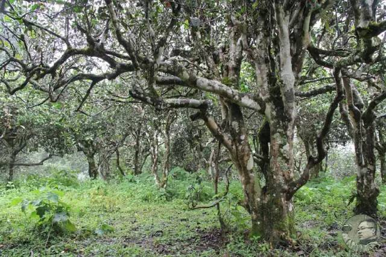
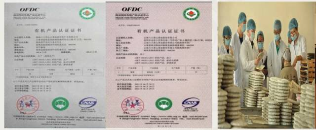

交易中心
交易中心
 交易指南
交易指南
 普洱档案
普洱档案
 普洱资讯
普洱资讯
 下载中心
下载中心
 活动频道
活动频道

携贺开古树茶，迎普洱证券化
2015-12-15 15:53 来源：未知
“我一个做茶的，为什么我要选择学金融呢？我其实是想在两个领域都进行探讨。懂金融的人当中，懂收藏和品鉴普洱茶的人不少，但是懂生产的就很少了，普洱茶如果要进入金融领域，在深入的设置上是需要跨领域的，这样才能良性循环。普洱茶要进入金融领域，光靠金融专家不行，要跨界共同的构建。”这是2014年9月，阮殿蓉女士接受《茶业复兴》采访的时候说过的一段话，当时她还正在准备清华五道口金融学院的毕业论文。

我在文章的开篇重提这段话，是因为它与我们今天要喝的茶有关。今天品鉴会的主角——贺开古茶庄园有机茶，今天（2015年12月10日）在蒙顶山普洱茶交易中心正式上线交易，限量22428饼。

云南六大茶山茶业股份有限公司贺开古茶庄园有机普洱茶是蒙顶山普洱交易中心第一批上线的产品之一，其采用贺开古茶山树龄在200-1400年间的栽培型有机古树茶为原料精制而成。

环顾整个市场环境，茶叶的价格已经越来越透明，信息越来越公开，可评估性也逐渐在显现。在这个过程中，茶叶准化也在持续推进。互联网+普洱+金融，这对于茶行业，就像打开了一个新的世界，可以预见到，这将形成潮流。
蒙顶山普洱茶交易中心对贺开庄园的产区优势，六大茶山的企业实力、品牌实力和工艺保障方面都给出了高度的评价。贺开古茶山是目前世界上已发现的连片面积最大、密度最高、保护得最好的古茶园。这里的古茶树茶叶叶芽肥硕，内含物质丰富，茶汤金黄明亮，香高馥郁，滋味浓厚，微苦甘爽，茶气持久，具有较高的收藏和品饮价值。
除此之外，还有云南六大茶山茶业股份有限公司强大的科研名家团队作为保障。云南六大茶山茶业股份有限公司经过上千次拼配、品评、比较，集传统工艺和现代加工工艺为一体精工制作而成的茶品，是为消费者、投资者奉献的放心茶品。同时，六大茶山在原料收购、精制、成品、包装等方面都做好产品的全程可追溯性，使产品从茶园到茶杯的的全程都是有据可循的。普洱茶国家标准只是一个基础标准，但是六大茶山的企业标准远远高于基础标准。


（一）价格波不波动，优质名山原料的价值就在那里，只增不减。著名茶山，排除一小部分炒作成分，单说其稀缺的原料价值就是毋庸置疑的。我是去过古茶山的，那是在西双版纳的一座与世隔绝有着千年历史的古茶山，贺开。贺开古茶山是目前世界上已发现的连片面积最大、密度最高、保护得最好的古茶园。这里的古茶树茶叶叶芽肥硕，内含物质丰富，茶汤金黄明亮，香高馥郁，滋味浓厚，微苦甘爽，茶气持久。云南六大茶山茶业股份有限公司对贺开古茶山具有独家综合开发权。

漫山遍野一眼看不到头的连片古茶园，闻不到一丝丝农药残留的气息，只有茶花香和野猪还有牛羊咀嚼食物后散发的青草香。随手摘下几片茶树嫩叶，泡在水瓶里，就是一杯香茗。而且这个茶山茶树的生长环境已经通过目前中国最权威的有机农业认证机构——南京国环有机产品认证中心的审核认证，生产出来的每一片茶都有唯一的身份证。这样的原料，再配以生产过程严格的质量把控，不论将来价格怎么随市场、供求、国家政策的变化而波动，其价值也是会随时间呈稳步上升的趋势。


（二）强大的科研名家团队保障。拥有优质的原料是前提，强大的科研团队才能助其实现质的飞跃。云南六大茶山茶业股份有限公司加强与国内外茶叶科研机构、大专院校的合作，组织最尖端的研发团队（由茶叶、食品、化学、微生物、医药等专业人才组成），经过上千次拼配、品评、比较，集传统工艺和现代加工工艺为一体精工制作而成的茶品，才是为消费者、投资者奉献的放心茶品。


（三）品牌企业，高于普洱茶国家标准生产、检验出库。普洱茶国家标准只是一个基础标准，但是对于六大茶山而言企业标准是高于基础标准的。六大茶山在技术级别要求、设备要求、规模要求、包装要求等方面全方位达到龙头企业的标准，获得龙头企业的认可和担保承诺。同时，六大茶山在原料收购、精制、成品、包装等方面都做好产品的全程可追溯性，使产品从茶园到茶杯的的全程都是有据可循的。这意味着以这套标准生产出来的普洱茶，就算让任意一个企业兜底买单，这个企业也是承认的。

（四）对茶品品质进行全程追溯性鉴定。根据六大茶山提供的品鉴记录、产品特点，第三方专家委员会在专业公证机构公证人员的全程陪同下，从外形、汤色、香气、滋味、叶底等方面，按最高的质量检测标准进行评审，并做出权威鉴定。检测后第三方专家委员对茶品的品质、市场价格进行预估，并对产品从原料到出厂整个过程进行一个追溯，验证品质是否如生产茶企所言那样值得信赖。因为，大家说好，才是真的好。

今天，我们选择在上午举行品鉴会，伴随着冬日暖阳中，我们边喝茶，边等待一个历史时刻的到来。
我们在昆明的暖阳喝着茶，关注着这款茶的大盘走势，刚刚开始，就涨停了，对于熟知这款茶品质的我们，是在意料之中的。任何传统行业与互联网的结合，最核心的还是要传统行业有过硬的质量和技术，追本溯源，寻找最优质普洱茶才是制胜的法宝。这款茶的内质，绝够硬。


升值潜力的事交给了大盘，在开盘即涨停的喜讯中，我们更需要静下心来品一品茶香。这款茶的香气刚开始的时候略有点新味，但是那种清香会迅速飘逸，进而展现出花香，香气随着时间，随着每一泡也越来越沉，渐渐变成了浓郁的蜜香，直到最后变得略有些木质的温暖气息。这种层次感表现在每一泡，每一杯，每一口中。它黄绿的汤色清澈透亮，从始至终。公道杯中的茶汤泛着绝美的裙边。

它的滋味同样具有可爱的层次感，变化无穷而绵延有序。第一道茶便细腻温润，更具贺开茶典型的“砂滑”汤质。一泡泡下去，滋味愈加饱满，生津回甘愈加强烈持久，约7泡上下，茶汤显现粘稠，只一小杯，也可无尽回味。我们以往的品鉴会，一款茶喝到第10泡为止，但这款茶，我们喝到第13泡还意犹未尽。


今天，注定是普洱茶行业历史上的节点，为了迎接正式到来的金融化运作，每个参与者想必都会竭尽所能，为普洱茶行业的新世界带一个好头。从今天开始，这款茶有没有升值潜力，也不消我们多少口舌了，接下来就是数字来说话的时代。


文章来源于六大茶山

- 勐海陈升茶业有限公司2015-12-08
- 云南下关沱茶（集团）股份有限公司2015-12-07
- 云南中茶茶业有限公司2015-12-07
- 祥源茶业股份有限公司2015-12-07
- 安宁海湾茶业有限公司2015-11-04